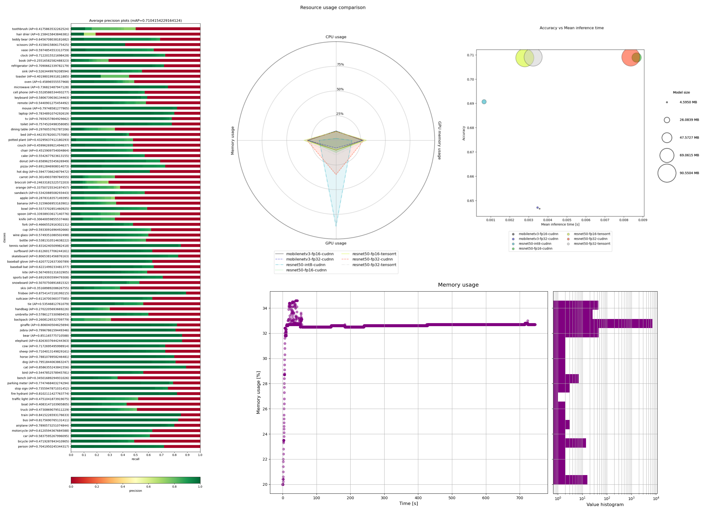
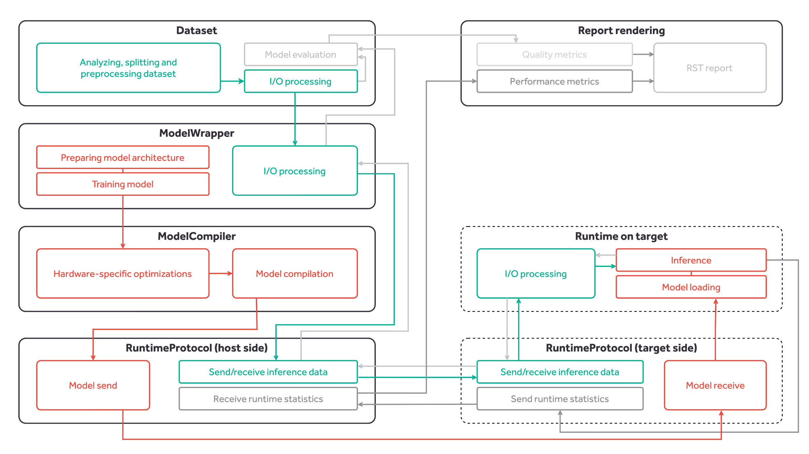

Kenning¶
Copyright (c) 2020-2026 Antmicro
Kenning is a framework for creating deployment flows and runtimes for Deep Neural Network applications on various target hardware.
Kenning documentation | Core API | kenning.ai | Tutorials 
Contents:
Introduction¶
Kenning aims towards providing modular execution blocks for:
dataset management,
model training,
model optimization and compilation for a given target hardware,
running models using efficient runtimes on target device,
model evaluation and performance reports.
These can be used seamlessly regardless of underlying frameworks for the above-mentioned steps.
Kenning’s aim is not to bring yet another training or compilation framework for deep learning models - there are lots of mature and versatile frameworks that support certain models, training routines, optimization techniques, hardware platforms and other components crucial to the deployment flow. Still, there is no framework that would support all of the models or target hardware devices - especially the support matrix between compilation frameworks and target hardware is extremely sparse. This means that any change in the application, especially in hardware, may end up in a necessity to change the entirety or a significant part of the application flow.
Kenning addresses this issue by providing a unified API that focuses on deployment tasks rather than their implementation - the developer decides which implementation should be used for each task, and with Kenning, it is possible to do in a seamless way. This way, switching to another target platform results, in most cases, in a very small change in the code, instead of reimplementing larger parts of a project. This is how Kenning can get the most out of the existing Deep Neural Network training and compilation frameworks.
Seamless nature of Kenning also allows developers to quickly evaluate the model on various stages of optimizations and compare them as shown in Kenning usage.
Kenning installation¶
Module installation with pip¶
NOTE: Kenning supports Python up to 3.11.
To install Kenning with its basic dependencies with pip, run:
pip install -U git+https://github.com/antmicro/kenning.git
Since Kenning can support various frameworks, and not all of them are required for users’ particular use cases, some of the requirements are optional. We can distinguish the following groups of extra requirements:
tensorflow- modules for work with TensorFlow models (ONNX conversions, addons, and TensorFlow framework),torch- modules for work with PyTorch models,mxnet- modules for work with MXNet models,nvidia_perf- modules for performance measurements for NVIDIA GPUs,object_detection- modules for work with YOLOv3 object detection and the Open Images Dataset V6 computer vision dataset,speech_to_text- modules for work with audio samples and speech-to-text models,iree- modules for IREE compilation and runtime,tvm- modules for Apache TVM compilation and runtime,onnxruntime- modules for ONNX Runtime,nni- modules for Neural Network Intelligence optimizers,docs- modules for generating documentation,test- modules for Kenning framework testing,real_time_visualization- modules for real time visualization runners,pipeline_manager- modules for communication with visual editor,reports- modules for generating reports and comparisons,uart- modules for work with serial ports,renode- modules for work with Renode,fuzzy- modules for fuzzy search.
To install the extra requirements, e.g. tensorflow, run:
sudo pip install git+https://github.com/antmicro/kenning.git#egg=kenning[tensorflow]
or, in newer pip releases:
pip install "kenning[tensorflow] @ git+https://github.com/antmicro/kenning.git"
Working directly with the repository¶
For development purposes, and to use additional resources (such as sample scripts), clone the repository with:
git clone https://github.com/antmicro/kenning.git
cd kenning/
Then install using:
pip install -e ".[tensorflow,tflite,tvm,reports]"
Kenning structure¶

The kenning module consists of the following submodules:
core- provides interface APIs for datasets, models, optimizers, runtimes, protocols, and data convertersdatasets- provides implementations for datasetsmodelwrappers- provides implementations for models for various problems implemented in various frameworks,optimizers- provides implementations for compilers and optimizers for deep learning models,runtimes- provides implementations of runtime on target devices,interfaces- provides interface classes to group related methods used in Kenningcoreclasses,protocols- provides implementations for communication protocols between host and tested target,dataproviders- provides implementations for reading input data from various sources, such as camera, directories or TCP connections,dataconverters- provides implementations for data converters for various data typesoutputcollectors- provides implementations for processing outputs from models, i.e. saving results to file, or displaying predictions on screen.onnxconverters- provides ONNX conversions for a given framework along with a list of models to test the conversion on,runners- provide implementations for runners that can be used in runtime,drawing- provides methods for rendering plots for reports,resources- contains project’s resources, like RST templates, or trained models,scenarios- contains executable scripts for running training, inference, benchmarks and other tests on target devices,utils- various functions and classes used in all above-mentioned submodules,tests- submodules for framework testing,pipeline_manager- contains tools for integrating with Pipeline Manager visualizercli- provides tools and methods for creating CLI tools based on Kenning
core classes used throughout the entire Kenning framework:
Datasetclass - performs dataset download, preparation, dataset-specific input preprocessing (i.e. input file opening, normalization), output postprocessing and model evaluation,ModelWrapperclass - trains the model, prepares the model, performs model-specific input preprocessing and output postprocessing, runs inference on host using native framework,Optimizerclass - optimizes and compiles the model,Runtimeclass - loads the model, performs inference on compiled model, runs target-specific processing of inputs and outputs, and runs performance benchmarks,Protocolclass - implements the communication protocol between the host and the target,DataProviderclass - implements data provision from such sources as camera, TCP connection or others for inference,OutputCollectorclass - implements parsing and utilization of data from inference (such as displaying the visualizations, sending the results to via TCP),DataConverterclass - performs data conversion from dataset-specific format to protocol-specific format and vice versa,Runnerclass - represents single runtime processing block.
Kenning usage¶
There are several ways to use Kenning:
Using executable scripts from the
scenariossubmodule, configurable via JSON files (recommended approach);Using executable scripts from the
scenariossubmodule, configurable via command-line arguments;Using Kenning as a Python module.
Kenning scenarios are executable scripts that can be used for:
Model training and benchmarking using its native framework (
kenning.scenarios.model_training),Model optimization and compilation for target hardware (
kenning.scenarios.inference_tester),Model benchmarking on target hardware (
kenning.scenarios.inference_testerandkenning.scenarios.inference_server),Rendering performance and quality reports from benchmark data (
kenning.scenarios.render_report),and more.
They are available through the kenning executable as subcommands.
To get the current list of subcommands, run:
kenning -h
The available subcommands are:
train- trains the given model (kenning.scenarios.model_training).optimize- optimizes and compiles the model for a given target device (kenning.scenarios.inference_tester).test- runs benchmark and evaluation of the model on the target device (kenning.scenarios.inference_tester).report- creates Markdown and HTML files summarizing the quality of the model in terms of performance and predictions.flow- runs Kenning-based applications.visual-editor- runs a graphical interface letting you represent, edit and run optimizations and applications in-browser using Pipeline Manager.fine-tune-optimizers- runs a search for the best optimizations for a given target platform based on selected optimizers, runtimes and models, along with their settings.server- runs a benchmark and evaluation server on target device.info- provides information about a given Kenning class.list- lists available Kenning modules for optimization and runtime.fuzzy-search- searches for class path across Kenning and returns it.cache- manages Kenning cache used for models and datasets.completion- configures autocompletion feature for Kenning CLI.
Running Kenning¶
Let’s start off with installing the module and its necessary dependencies:
pip install "kenning[tensorflow,tflite,tvm,pipeline_manager,reports] @ git+https://github.com/antmicro/kenning.git"
Kenning provides two tools for displaying information about available classes: kenning list and kenning info.
The kenning list tool lists all available modules used to form optimization and runtime pipelines in Kenning.
Running:
kenning list
Should list:
Optimizers (in kenning.optimizers):
kenning.optimizers.nni_pruning.NNIPruningOptimizer
kenning.optimizers.onnx.ONNXCompiler
kenning.optimizers.tensorflow_pruning.TensorFlowPruningOptimizer
kenning.optimizers.model_inserter.ModelInserter
kenning.optimizers.tvm.TVMCompiler
kenning.optimizers.iree.IREECompiler
kenning.optimizers.tensorflow_clustering.TensorFlowClusteringOptimizer
kenning.optimizers.tflite.TFLiteCompiler
Datasets (in kenning.datasets):
kenning.datasets.pet_dataset.PetDataset
kenning.datasets.visual_wake_words_dataset.VisualWakeWordsDataset
kenning.datasets.random_dataset.RandomizedDetectionSegmentationDataset
kenning.datasets.open_images_dataset.OpenImagesDatasetV6
kenning.datasets.random_dataset.RandomizedClassificationDataset
kenning.datasets.common_voice_dataset.CommonVoiceDataset
kenning.datasets.magic_wand_dataset.MagicWandDataset
kenning.datasets.coco_dataset.COCODataset2017
kenning.datasets.imagenet_dataset.ImageNetDataset
Modelwrappers (in kenning.modelwrappers):
kenning.modelwrappers.instance_segmentation.yolact.YOLACT
kenning.modelwrappers.classification.tflite_magic_wand.MagicWandModelWrapper
kenning.modelwrappers.classification.pytorch_pet_dataset.PyTorchPetDatasetMobileNetV2
kenning.modelwrappers.object_detection.darknet_coco.TVMDarknetCOCOYOLOV3
kenning.modelwrappers.instance_segmentation.yolact.YOLACTWithPostprocessing
kenning.modelwrappers.classification.tensorflow_imagenet.TensorFlowImageNet
kenning.modelwrappers.classification.tflite_person_detection.PersonDetectionModelWrapper
kenning.modelwrappers.classification.tensorflow_pet_dataset.TensorFlowPetDatasetMobileNetV2
kenning.modelwrappers.instance_segmentation.pytorch_coco.PyTorchCOCOMaskRCNN
kenning.modelwrappers.object_detection.yolov4.ONNXYOLOV4
...
To list available compilers, run:
kenning list optimizers
For more verbose information, use the -v and -vv flags (module dependencies, description, supported formats and more)
The kenning info tool provides more detailed information on a given class, e.g. for:
kenning info kenning.optimizers.tflite.TFLiteCompiler
We should get something like:
Class: TFLiteCompiler
The TFLite and EdgeTPU compiler.
Dependencies:
* onnx2tf
* tensorflow
* numpy
* onnx
* tensorflow_model_optimization
Input formats:
* keras
* tensorflow
* onnx
Output formats:
* tflite
Arguments specification:
* model_framework
* argparse_name: --model-framework
* description: The input type of the model, framework-wise
* default: onnx
* enum
* keras
* tensorflow
* onnx
* target
* argparse_name: --target
* description: The TFLite target device scenario
* default: default
* enum
* default
* int8
* float16
* edgetpu
* inference_input_type
* argparse_name: --inference-input-type
* description: Data type of the input layer
* default: float32
* enum
* float32
* int8
* uint8
...
If a certain class does not have necessary dependencies installed, Kenning suggests what modules need to be installed, e.g.:
This method requires additional dependencies, please use `pip install "kenning[tensorflow]"` to install them.
The classes described above are used to form optimization and evaluation scenarios in Kenning. Some of them can also be used to quickly prototype simple applications.
With Kenning, we can combine multiple compilers and optimizers to create a fast and small model, including embedded devices. The optimization flow can be defined in JSON format, as follows:
{
"model_wrapper": {
"type": "kenning.modelwrappers.classification.tensorflow_pet_dataset.TensorFlowPetDatasetMobileNetV2",
"parameters": {
"model_name": "tvm-avx2-int8",
"model_path": "kenning:///models/classification/tensorflow_pet_dataset_mobilenetv2.h5"
}
},
"dataset": {
"type": "kenning.datasets.pet_dataset.PetDataset",
"parameters": {
"dataset_root": "./build/PetDataset"
}
},
"optimizers": [
{
"type": "kenning.optimizers.tflite.TFLiteCompiler",
"parameters": {
"target": "int8",
"compiled_model_path": "./build/int8.tflite",
"inference_input_type": "int8",
"inference_output_type": "int8",
"dataset_percentage": 0.01
}
},
{
"type": "kenning.optimizers.tvm.TVMCompiler",
"parameters": {
"target": "llvm -mcpu=core-avx2",
"conv2d_data_layout": "NCHW",
"compiled_model_path": "./build/int8_tvm.tar"
}
}
],
"runtime": {
"type": "kenning.runtimes.tvm.TVMRuntime",
"parameters": {
"save_model_path": "./build/int8_tvm.tar"
}
}
}
The above scenario takes the MobileNetV2 model trained for classification of cat and dog breeds, and passes it to:
kenning.optimizers.tflite.TFLiteCompilerto quantize the weights of the modelkenning.optimizers.tvm.TVMCompilerto create an optimized runtime of the model, utilizing AVX2 vector instructions.
The optimization of the model, its evaluation and report generation can be run with one command:
kenning optimize test report --json-cfg sample.json --measurements out.json --report-path report.md --to-html report-html
The generated report can be found in the report-html directory.
Kenning tutorials¶
For more examples on Kenning usage, check Kenning tutorials.
Using Kenning as a library in Python scripts¶
Kenning is also a regular Python module - after pip installation it can be used in Python scripts. The example compilation of the model can look as follows:
from pathlib import Path
from kenning.datasets.pet_dataset import PetDataset
from kenning.modelwrappers.classification.tensorflow_pet_dataset import TensorFlowPetDatasetMobileNetV2
from kenning.optimizers.tflite import TFLiteCompiler
from kenning.runtimes.tflite import TFLiteRuntime
from kenning.core.measurements import MeasurementsCollector
from kenning.utils.resource_manager import ResourceURI
dataset = PetDataset(
root=Path('./build/pet-dataset/')
)
model = TensorFlowPetDatasetMobileNetV2(
model_path=ResourceURI('kenning:///models/classification/tensorflow_pet_dataset_mobilenetv2.h5'),
dataset=dataset
)
model.save_io_specification(model.model_path)
compiler = TFLiteCompiler(
dataset=dataset,
compiled_model_path=Path('./build/compiled-model.tflite'),
modelframework='keras',
target='default',
inferenceinputtype='float32',
inferenceoutputtype='float32'
)
compiler.compile(
input_model_path=ResourceURI('kenning:///models/classification/tensorflow_pet_dataset_mobilenetv2.h5')
)
The above script downloads the dataset and compiles the model with FP32 inputs and outputs using TensorFlow Lite.
To get a quantized model, replace target, inferenceinputtype and inferenceoutputtype to int8:
compiler = TFLiteCompiler(
dataset=dataset,
compiled_model_path=Path('./build/compiled-model.tflite'),
modelframework='keras',
target='int8',
inferenceinputtype='int8',
inferenceoutputtype='int8',
dataset_percentage=0.3
)
compiler.compile(
input_model_path=ResourceURI('kenning:///models/classification/tensorflow_pet_dataset_mobilenetv2.h5')
)
To check how the compiled model is performing, create TFLiteRuntime object and run local model evaluation:
runtime = TFLiteRuntime(
protocol=None,
model_path=Path('./build/compiled-model.tflite')
)
runtime.run_locally(
dataset,
model,
Path('./build/compiled-model.tflite')
)
MeasurementsCollector.save_measurements('out.json')
The runtime.run_locally method runs benchmarks of the model on the current device.
The MeasurementsCollector class collects all benchmarks’ data for model inference and saves it in JSON format that can be later used to render reports with the kenning.scenarios.render_report script.
As it can be observed, all classes accessible from JSON files in these scenarios share their configuration a with the classes in the Python scripts mentioned above.
Adding new implementations¶
Dataset, ModelWrapper, Optimizer, Protocol, Runtime and other classes from the kenning.core module have dedicated directories for their implementations.
Each method in the base classes that requires implementation raises an NotImplementedError exception.
They can be easily implemented or extended, but they need to conform to certain rules, usually described in the source documentation.
For more details and examples on how the Kenning framework can be adjusted and enhanced, follow the Kenning documentation. Implemented methods can be also overridden, if necessary.
Most of the base classes implement form_argparse and from_argparse methods.
The former creates an argument parser and a group of arguments specific to the base class.
The latter creates an object of the class based on the arguments from argument parser.
Inheriting classes can modify form_argparse and from_argparse methods to provide better control over their processing, but they should always be based on the results of their base implementations.